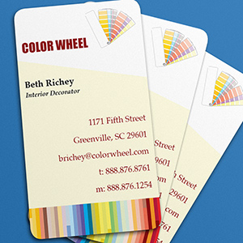
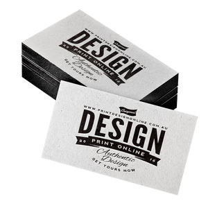

Визитная карточка – это маленький, но очень важный штрих в «портрете» настоящего профессионала.
Телефоны:
+38 (044) 362-05-77
+38 (050) 736-91-50
Визитная карточка (визитка)
 традиционный носитель контактной информации о человеке или организации. Изготавливается из бумаги, картона или пластика небольшого формата, существует также вариант CD-визитки, выполненный на уменьшенной до 50×90 мм поверхности CD-диска. Существуют также визитные карточки, изготовленные из дерева (деревянный шпон) и металла.Визитка включает имя владельца, компанию (обычно с логотипом) и контактную информацию (адрес, телефонный номер и/или адрес электронной почты).
Деловые визитки

Дизайнерские визитки 
Стильные визитки